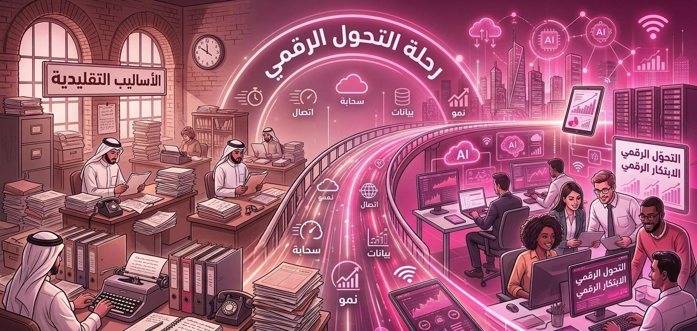

التحول الرقمي هو عملية دمج التقنيات الرقمية الحديثة في جميع مجالات العمل، مما يغير بشكل جذري كيفية عمل المؤسسات وكيفية تقديمها للقيمة للمستفيدين. يهدف هذا التحول إلى تحسين الكفاءة، تسريع الإنجاز، ومواكبة التطورات التكنولوجية المتسارعة في العصر الحديث، والانتقال من الأساليب التقليدية إلى نماذج عمل مبتكرة تعتمد على التكنولوجيا.
مع هذا التطور المستمر، برزت الحاجة إلى العديد من الوظائف المستحدثة في سوق العمل لتدعم وتنفذ التحول الرقمي، ومن أبرز هذه الوظائف: علماء ومحللو البيانات، مهندسو الذكاء الاصطناعي، خبراء الأمن السيبراني، متخصصو الحوسبة السحابية، ومطورو واجهات وتجربة المستخدم (UI/UX).
